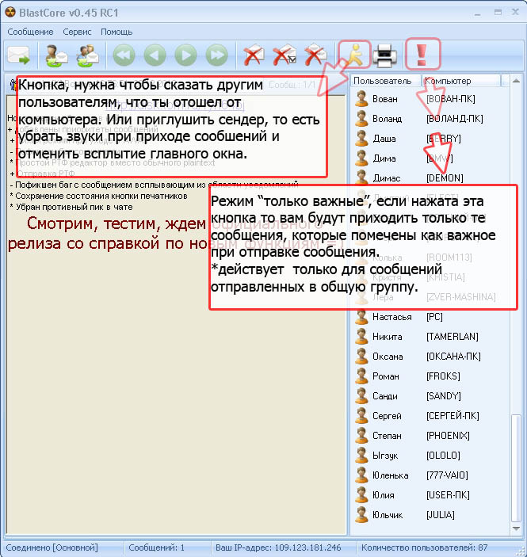
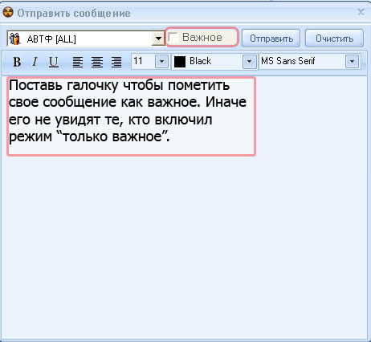

Тут когда-нибудь будет нормальная справка по BlastCore Sender =)
А пока что самый минимум — немного информации по опциям:
- Показывать панель сообщений — отображение панели полученных сообщений;
- Запускать программу при старте Windows;
- «Всплывать», когда приходит сообщение — развёртывание окна программы при получении сообщения;
- Сворачивать в трей при удалении последнего сообщения;
- Запускать свёрнутым
- Включить звуки — проигрывание звуков программы при получении Личного сообщения, Общего сообщения или вызова на чат (по умолчанию с программой идет несколько звуков, но вы можете установить свои посредствам соответствующих полей настройки).
Некоторые возникающие вопросы:
- Кто такие печатники?
Печатники — группа для людей, имеющих возможность распечатать что-либо. Довольно часто пользователи в Сендере задают вопрос: "Кто печатает" — не нужно писать его всей группе АВТФ, достаточно написать сообщение группе Печатники. Для добавления себя в группу печатники достаточно нажать на пиктограмму принтера в главном окне программы.
- Я отошел от своего компьютера, хочу чтобы пользователи, желающие пообщаться со мной это видели.
Для этого присутсвует кнопка "Сменить статус на не активен", расположенная в главном окне программы. При этом, ваща пиктограмма в списке пользователей изменит свой цвет.
- Где я могу увидеть список сообщения, отправленных пользователями за какой-либо день?Для этого существует Веб-архив, попасть в который можно с помощью последовательного нажатия кнопок "Сервис", "Открыть Веб-архив", при этом откроется страничка с сообщениями за текущий день.
- Как отправить сообщение какому-либо пользователю?
Для отправки сообщения в "приват" достаточно в списке пользователей вызвать контекстное меню для нужно пользователя (щёлкнуть правой кнопкой мыши) и выбрать пункт меню "Новое сообщение". Более того, можно свзяться с пользователем в режиме чата, для этого выбираем пункт "Вызвать на чат", при этом, выбранный вами пользователь получит уведомление о вашем желании начать разговор.
Нововведения версии 0.45:

